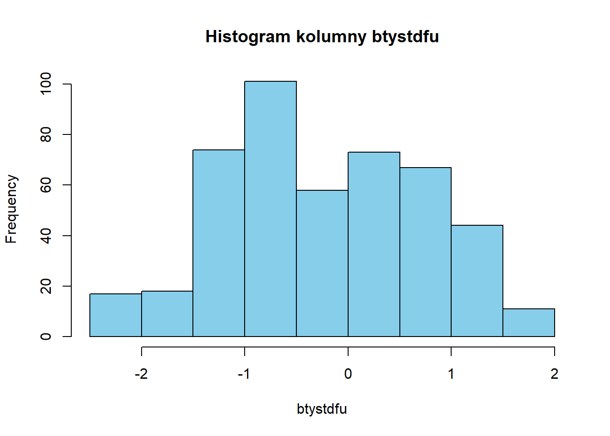
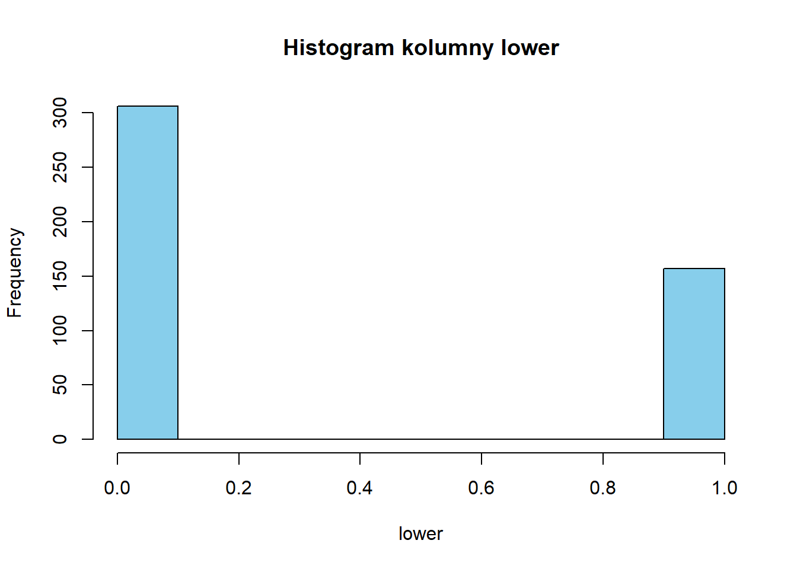

library(readxl)Warning: pakiet 'readxl' został zbudowany w wersji R 4.3.2# Przykładowa ścieżka do pliku Excela
sciezka_do_pliku <- "beauty.csv"
# Zaimportuj dane z arkusza "Sheet1"
data <- read.csv(sciezka_do_pliku)library(readxl)Warning: pakiet 'readxl' został zbudowany w wersji R 4.3.2# Przykładowa ścieżka do pliku Excela
sciezka_do_pliku <- "beauty.csv"
# Zaimportuj dane z arkusza "Sheet1"
data <- read.csv(sciezka_do_pliku)data$class <- NA
sameCalss <- data[,18:48];
for (i in 1:nrow(data)){
col_index <- which(data[i,18:47] == 1)
if(length(col_index) == 1){
data$class[i] = col_index
}else if(length(col_index) > 1){
data$class[i] = "more 1"
}
}
data <- data[,-c(18:47)]analyze_column <- function(data, column_name) {
# Sprawdzamy, czy kolumna istnieje w ramce danych
if (!column_name %in% colnames(data)) {
stop("Podana kolumna nie istnieje w ramce danych.")
}
# Wybieramy kolumnę
column <- data[[column_name]]
# Wartości minimalna i maksymalna
min_value <- min(column)
max_value <- max(column)
# Podstawowe statystyki
mean_value <- mean(column)
median_value <- median(column)
sd_value <- sd(column)
# Znajdowanie wartości odstających
outliers <- boxplot.stats(column)$out
# Rysowanie histogramu
histogram <-hist(column, main = paste("Histogram kolumny", column_name),
xlab = column_name, col = "skyblue", border = "black")
# Wyświetlanie informacji
print(paste("Wartość minimalna:", min_value))
print(paste("Wartość maksymalna:", max_value))
print(paste("Średnia:", mean_value))
print(paste("Mediana:", median_value))
print(paste("Odchylenie standardowe:", sd_value))
print(paste("Wartości odstające:", outliers))
}actual_value <- data[, c(1), drop = FALSE]
# Wywołanie funkcji
analyze_column(actual_value, colnames(actual_value))[1] "Wartość minimalna: 0"
[1] "Wartość maksymalna: 1"
[1] "Średnia: 0.546436285097192"
[1] "Mediana: 1"
[1] "Odchylenie standardowe: 0.498377497073888"
[1] "Wartości odstające: "Numer profesora
actual_value <- data[, c(2), drop = FALSE]
# Wywołanie funkcji
analyze_column(actual_value, colnames(actual_value))[1] "Wartość minimalna: 1"
[1] "Wartość maksymalna: 94"
[1] "Średnia: 45.4341252699784"
[1] "Mediana: 44"
[1] "Odchylenie standardowe: 27.5089021726818"
[1] "Wartości odstające: "##minority mniejszość
actual_value <- data[, c(3), drop = FALSE]
# Wywołanie funkcji
analyze_column(actual_value, colnames(actual_value))[1] "Wartość minimalna: 0"
[1] "Wartość maksymalna: 1"
[1] "Średnia: 0.138228941684665"
[1] "Mediana: 0"
[1] "Odchylenie standardowe: 0.345513444811989"
[1] "Wartości odstające: 1" "Wartości odstające: 1" "Wartości odstające: 1"
[4] "Wartości odstające: 1" "Wartości odstające: 1" "Wartości odstające: 1"
[7] "Wartości odstające: 1" "Wartości odstające: 1" "Wartości odstające: 1"
[10] "Wartości odstające: 1" "Wartości odstające: 1" "Wartości odstające: 1"
[13] "Wartości odstające: 1" "Wartości odstające: 1" "Wartości odstające: 1"
[16] "Wartości odstające: 1" "Wartości odstające: 1" "Wartości odstające: 1"
[19] "Wartości odstające: 1" "Wartości odstające: 1" "Wartości odstające: 1"
[22] "Wartości odstające: 1" "Wartości odstające: 1" "Wartości odstające: 1"
[25] "Wartości odstające: 1" "Wartości odstające: 1" "Wartości odstające: 1"
[28] "Wartości odstające: 1" "Wartości odstające: 1" "Wartości odstające: 1"
[31] "Wartości odstające: 1" "Wartości odstające: 1" "Wartości odstające: 1"
[34] "Wartości odstające: 1" "Wartości odstające: 1" "Wartości odstające: 1"
[37] "Wartości odstające: 1" "Wartości odstające: 1" "Wartości odstające: 1"
[40] "Wartości odstające: 1" "Wartości odstające: 1" "Wartości odstające: 1"
[43] "Wartości odstające: 1" "Wartości odstające: 1" "Wartości odstające: 1"
[46] "Wartości odstające: 1" "Wartości odstające: 1" "Wartości odstające: 1"
[49] "Wartości odstające: 1" "Wartości odstające: 1" "Wartości odstające: 1"
[52] "Wartości odstające: 1" "Wartości odstające: 1" "Wartości odstające: 1"
[55] "Wartości odstające: 1" "Wartości odstające: 1" "Wartości odstające: 1"
[58] "Wartości odstające: 1" "Wartości odstające: 1" "Wartości odstające: 1"
[61] "Wartości odstające: 1" "Wartości odstające: 1" "Wartości odstające: 1"
[64] "Wartości odstające: 1"##age Wiek profesora
actual_value <- data[, c(4), drop = FALSE]
# Wywołanie funkcji
analyze_column(actual_value, colnames(actual_value))[1] "Wartość minimalna: 29"
[1] "Wartość maksymalna: 73"
[1] "Średnia: 48.3650107991361"
[1] "Mediana: 48"
[1] "Odchylenie standardowe: 9.80274203786482"
[1] "Wartości odstające: "studentka drugiego roku studiów wyższych
actual_value <- data[, c(5), drop = FALSE]
# Wywołanie funkcji
analyze_column(actual_value, colnames(actual_value))[1] "Wartość minimalna: 1"
[1] "Wartość maksymalna: 10"
[1] "Średnia: 5.21382289416847"
[1] "Mediana: 5"
[1] "Odchylenie standardowe: 2.01822407760885"
[1] "Wartości odstające: 10" "Wartości odstające: 10" "Wartości odstające: 10"
[4] "Wartości odstające: 10" "Wartości odstające: 10" "Wartości odstające: 10"##beautyflowerdiv ocena 10 do 1, studentka niższego stopnia
actual_value <- data[, c(6), drop = FALSE]
# Wywołanie funkcji
analyze_column(actual_value, colnames(actual_value))[1] "Wartość minimalna: 1"
[1] "Wartość maksymalna: 8"
[1] "Średnia: 3.96328293736501"
[1] "Mediana: 4"
[1] "Odchylenie standardowe: 1.87393595201135"
[1] "Wartości odstające: "ocena od 1 do 10 studentka wyższego stopnia
actual_value <- data[, c(7), drop = FALSE]
# Wywołanie funkcji
analyze_column(actual_value, colnames(actual_value))[1] "Wartość minimalna: 1"
[1] "Wartość maksymalna: 9"
[1] "Średnia: 5.01943844492441"
[1] "Mediana: 5"
[1] "Odchylenie standardowe: 1.9344367581855"
[1] "Wartości odstające: "ocena od 1 do 10 student 2 roku wyszego stopnia
actual_value <- data[, c(8), drop = FALSE]
# Wywołanie funkcji
analyze_column(actual_value, colnames(actual_value))[1] "Wartość minimalna: 1"
[1] "Wartość maksymalna: 9"
[1] "Średnia: 4.75161987041037"
[1] "Mediana: 5"
[1] "Odchylenie standardowe: 1.57526626973242"
[1] "Wartości odstające: "##beautymlowerdiv ocena od 1 do 10 student niższego stopnia
actual_value <- data[, c(9), drop = FALSE]
# Wywołanie funkcji
analyze_column(actual_value, colnames(actual_value))[1] "Wartość minimalna: 1"
[1] "Wartość maksymalna: 7"
[1] "Średnia: 3.41252699784017"
[1] "Mediana: 3"
[1] "Odchylenie standardowe: 1.63710185233506"
[1] "Wartości odstające: "ocena od 1 do 10 student wyższego stopnia
actual_value <- data[, c(10), drop = FALSE]
# Wywołanie funkcji
analyze_column(actual_value, colnames(actual_value))[1] "Wartość minimalna: 1"
[1] "Wartość maksymalna: 9"
[1] "Średnia: 4.14686825053996"
[1] "Mediana: 4"
[1] "Odchylenie standardowe: 2.11058605705845"
[1] "Wartości odstające: 9" "Wartości odstające: 9" "Wartości odstające: 9"
[4] "Wartości odstające: 9" "Wartości odstające: 9" "Wartości odstające: 9"
[7] "Wartości odstające: 9" "Wartości odstające: 9" "Wartości odstające: 9"
[10] "Wartości odstające: 9" "Wartości odstające: 9" "Wartości odstające: 9"
[13] "Wartości odstające: 9" "Wartości odstające: 9" "Wartości odstające: 9"
[16] "Wartości odstające: 9" "Wartości odstające: 9"##btystdave Średnia z 6 ustandaryzowanych ocen
actual_value <- data[, c(11), drop = FALSE]
# Wywołanie funkcji
analyze_column(actual_value, colnames(actual_value))[1] "Wartość minimalna: -1.538843"
[1] "Wartość maksymalna: 1.881674"
[1] "Średnia: -0.0883490274298056"
[1] "Mediana: -0.1563634"
[1] "Odchylenie standardowe: 0.788647641805702"
[1] "Wartości odstające: "actual_value <- data[, c(12), drop = FALSE]
# Wywołanie funkcji
analyze_column(actual_value, colnames(actual_value))[1] "Wartość minimalna: -2.096532"
[1] "Wartość maksymalna: 2.198059"
[1] "Średnia: -0.0857935963282937"
[1] "Mediana: -0.1878249"
[1] "Odchylenie standardowe: 0.963049981969149"
[1] "Wartości odstające: 1.720883" "Wartości odstające: 1.720883"
[3] "Wartości odstające: 1.720883" "Wartości odstające: 1.720883"
[5] "Wartości odstające: 1.720883" "Wartości odstające: 1.720883"
[7] "Wartości odstające: 2.198059" "Wartości odstające: 2.198059"
[9] "Wartości odstające: 1.720883" "Wartości odstające: 1.720883"
[11] "Wartości odstające: 1.720883" "Wartości odstające: 1.720883"
[13] "Wartości odstające: 1.720883" "Wartości odstające: 1.720883"
[15] "Wartości odstające: 1.720883" "Wartości odstające: 1.720883"
[17] "Wartości odstające: 1.720883" "Wartości odstające: 1.720883"
[19] "Wartości odstające: 1.720883" "Wartości odstające: 1.720883"
[21] "Wartości odstające: 1.720883" "Wartości odstające: 1.720883"
[23] "Wartości odstające: 1.720883" "Wartości odstające: 1.720883"
[25] "Wartości odstające: 1.720883" "Wartości odstające: 1.720883"
[27] "Wartości odstające: 1.720883" "Wartości odstające: 1.720883"
[29] "Wartości odstające: 1.720883" "Wartości odstające: 1.720883"
[31] "Wartości odstające: 1.720883" "Wartości odstające: 1.720883"
[33] "Wartości odstające: 1.720883" "Wartości odstające: 1.720883"
[35] "Wartości odstające: 1.720883" "Wartości odstające: 2.198059"
[37] "Wartości odstające: 2.198059" "Wartości odstające: 2.198059"
[39] "Wartości odstające: 2.198059" "Wartości odstające: 1.720883"
[41] "Wartości odstające: 1.720883" "Wartości odstające: 1.720883"
[43] "Wartości odstające: 1.720883" "Wartości odstające: 1.720883"##btystdfl
actual_value <- data[, c(13), drop = FALSE]
# Wywołanie funkcji
analyze_column(actual_value, colnames(actual_value))[1] "Wartość minimalna: -1.668032"
[1] "Wartość maksymalna: 2.052527"
[1] "Średnia: -0.0930219172786177"
[1] "Mediana: -0.0735065"
[1] "Odchylenie standardowe: 0.996012665099435"
[1] "Wartości odstające: "actual_value <- data[, c(14), drop = FALSE]
# Wywołanie funkcji
analyze_column(actual_value, colnames(actual_value))
[1] "Wartość minimalna: -2.029827"
[1] "Wartość maksymalna: 1.844361"
[1] "Średnia: -0.0801816933045356"
[1] "Mediana: -0.092733"
[1] "Odchylenie standardowe: 0.940814865097619"
[1] "Wartości odstające: "actual_value <- data[, c(15), drop = FALSE]
# Wywołanie funkcji
analyze_column(actual_value, colnames(actual_value))[1] "Wartość minimalna: -2.340983"
[1] "Wartość maksymalna: 2.495334"
[1] "Średnia: -0.0729801427645788"
[1] "Mediana: 0.0771755"
[1] "Odchylenie standardowe: 0.952311096122166"
[1] "Wartości odstające: "actual_value <- data[, c(16), drop = FALSE]
# Wywołanie funkcji
analyze_column(actual_value, colnames(actual_value))[1] "Wartość minimalna: -1.487607"
[1] "Wartość maksymalna: 2.037647"
[1] "Średnia: -0.0701455075593952"
[1] "Mediana: -0.3125226"
[1] "Odchylenie standardowe: 0.961866563880698"
[1] "Wartości odstające: "actual_value <- data[, c(17), drop = FALSE]
# Wywołanie funkcji
analyze_column(actual_value, colnames(actual_value))[1] "Wartość minimalna: -1.573116"
[1] "Wartość maksymalna: 2.100744"
[1] "Średnia: -0.127971481425486"
[1] "Mediana: -0.1954181"
[1] "Odchylenie standardowe: 0.969249728533521"
[1] "Wartości odstające: 2.100744" "Wartości odstające: 2.100744"
[3] "Wartości odstające: 2.100744" "Wartości odstające: 2.100744"
[5] "Wartości odstające: 2.100744" "Wartości odstające: 2.100744"
[7] "Wartości odstające: 2.100744" "Wartości odstające: 2.100744"
[9] "Wartości odstające: 2.100744" "Wartości odstające: 2.100744"
[11] "Wartości odstające: 2.100744" "Wartości odstające: 2.100744"
[13] "Wartości odstające: 2.100744" "Wartości odstające: 2.100744"
[15] "Wartości odstające: 2.100744" "Wartości odstające: 2.100744"
[17] "Wartości odstające: 2.100744"##courseevaluation śreadnia ocen z kursu
actual_value <- data[, c(18), drop = FALSE]
# Wywołanie funkcji
analyze_column(actual_value, colnames(actual_value))[1] "Wartość minimalna: 2.1"
[1] "Wartość maksymalna: 5"
[1] "Średnia: 3.99827213822894"
[1] "Mediana: 4"
[1] "Odchylenie standardowe: 0.554865565619595"
[1] "Wartości odstające: 2.3" "Wartości odstające: 2.2"
[3] "Wartości odstające: 2.1"##didevaluation numer osoby wypełniającej oceny
actual_value <- data[, c(19), drop = FALSE]
# Wywołanie funkcji
analyze_column(actual_value, colnames(actual_value))[1] "Wartość minimalna: 5"
[1] "Wartość maksymalna: 380"
[1] "Średnia: 36.6241900647948"
[1] "Mediana: 23"
[1] "Odchylenie standardowe: 45.018481271567"
[1] "Wartości odstające: 182" "Wartości odstające: 100"
[3] "Wartości odstające: 84" "Wartości odstające: 86"
[5] "Wartości odstające: 85" "Wartości odstające: 348"
[7] "Wartości odstające: 85" "Wartości odstające: 98"
[9] "Wartości odstające: 86" "Wartości odstające: 111"
[11] "Wartości odstające: 160" "Wartości odstające: 79"
[13] "Wartości odstające: 176" "Wartości odstające: 155"
[15] "Wartości odstające: 166" "Wartości odstające: 186"
[17] "Wartości odstające: 90" "Wartości odstające: 120"
[19] "Wartości odstające: 95" "Wartości odstające: 85"
[21] "Wartości odstające: 113" "Wartości odstające: 94"
[23] "Wartości odstające: 80" "Wartości odstające: 154"
[25] "Wartości odstające: 81" "Wartości odstające: 102"
[27] "Wartości odstające: 94" "Wartości odstające: 89"
[29] "Wartości odstające: 133" "Wartości odstające: 78"
[31] "Wartości odstające: 109" "Wartości odstające: 102"
[33] "Wartości odstające: 98" "Wartości odstające: 174"
[35] "Wartości odstające: 171" "Wartości odstające: 166"
[37] "Wartości odstające: 372" "Wartości odstające: 343"
[39] "Wartości odstające: 380" "Wartości odstające: 322"
[41] "Wartości odstające: 93" "Wartości odstające: 111"female = 1
actual_value <- data[, c(20), drop = FALSE]
# Wywołanie funkcji
analyze_column(actual_value, colnames(actual_value))[1] "Wartość minimalna: 0"
[1] "Wartość maksymalna: 1"
[1] "Średnia: 0.421166306695464"
[1] "Mediana: 0"
[1] "Odchylenie standardowe: 0.494280206460534"
[1] "Wartości odstające: "na obrazie widnieje marynakra/bluzka
actual_value <- data[, c(21), drop = FALSE]
# Wywołanie funkcji
analyze_column(actual_value, colnames(actual_value))[1] "Wartość minimalna: 0"
[1] "Wartość maksymalna: 1"
[1] "Średnia: 0.166306695464363"
[1] "Mediana: 0"
[1] "Odchylenie standardowe: 0.37275847956723"
[1] "Wartości odstające: 1" "Wartości odstające: 1" "Wartości odstające: 1"
[4] "Wartości odstające: 1" "Wartości odstające: 1" "Wartości odstające: 1"
[7] "Wartości odstające: 1" "Wartości odstające: 1" "Wartości odstające: 1"
[10] "Wartości odstające: 1" "Wartości odstające: 1" "Wartości odstające: 1"
[13] "Wartości odstające: 1" "Wartości odstające: 1" "Wartości odstające: 1"
[16] "Wartości odstające: 1" "Wartości odstające: 1" "Wartości odstające: 1"
[19] "Wartości odstające: 1" "Wartości odstające: 1" "Wartości odstające: 1"
[22] "Wartości odstające: 1" "Wartości odstające: 1" "Wartości odstające: 1"
[25] "Wartości odstające: 1" "Wartości odstające: 1" "Wartości odstające: 1"
[28] "Wartości odstające: 1" "Wartości odstające: 1" "Wartości odstające: 1"
[31] "Wartości odstające: 1" "Wartości odstające: 1" "Wartości odstające: 1"
[34] "Wartości odstające: 1" "Wartości odstające: 1" "Wartości odstające: 1"
[37] "Wartości odstające: 1" "Wartości odstające: 1" "Wartości odstające: 1"
[40] "Wartości odstające: 1" "Wartości odstające: 1" "Wartości odstające: 1"
[43] "Wartości odstające: 1" "Wartości odstające: 1" "Wartości odstające: 1"
[46] "Wartości odstające: 1" "Wartości odstające: 1" "Wartości odstające: 1"
[49] "Wartości odstające: 1" "Wartości odstające: 1" "Wartości odstające: 1"
[52] "Wartości odstające: 1" "Wartości odstające: 1" "Wartości odstające: 1"
[55] "Wartości odstające: 1" "Wartości odstające: 1" "Wartości odstające: 1"
[58] "Wartości odstające: 1" "Wartości odstające: 1" "Wartości odstające: 1"
[61] "Wartości odstające: 1" "Wartości odstające: 1" "Wartości odstające: 1"
[64] "Wartości odstające: 1" "Wartości odstające: 1" "Wartości odstające: 1"
[67] "Wartości odstające: 1" "Wartości odstające: 1" "Wartości odstające: 1"
[70] "Wartości odstające: 1" "Wartości odstające: 1" "Wartości odstające: 1"
[73] "Wartości odstające: 1" "Wartości odstające: 1" "Wartości odstające: 1"
[76] "Wartości odstające: 1" "Wartości odstające: 1"##fulldept zdjęcia w internecie
actual_value <- data[, c(22), drop = FALSE]
# Wywołanie funkcji
analyze_column(actual_value, colnames(actual_value))[1] "Wartość minimalna: 0"
[1] "Wartość maksymalna: 1"
[1] "Średnia: 0.894168466522678"
[1] "Mediana: 1"
[1] "Odchylenie standardowe: 0.307954622435965"
[1] "Wartości odstające: 0" "Wartości odstające: 0" "Wartości odstające: 0"
[4] "Wartości odstające: 0" "Wartości odstające: 0" "Wartości odstające: 0"
[7] "Wartości odstające: 0" "Wartości odstające: 0" "Wartości odstające: 0"
[10] "Wartości odstające: 0" "Wartości odstające: 0" "Wartości odstające: 0"
[13] "Wartości odstające: 0" "Wartości odstające: 0" "Wartości odstające: 0"
[16] "Wartości odstające: 0" "Wartości odstające: 0" "Wartości odstające: 0"
[19] "Wartości odstające: 0" "Wartości odstające: 0" "Wartości odstające: 0"
[22] "Wartości odstające: 0" "Wartości odstające: 0" "Wartości odstające: 0"
[25] "Wartości odstające: 0" "Wartości odstające: 0" "Wartości odstające: 0"
[28] "Wartości odstające: 0" "Wartości odstające: 0" "Wartości odstające: 0"
[31] "Wartości odstające: 0" "Wartości odstające: 0" "Wartości odstające: 0"
[34] "Wartości odstające: 0" "Wartości odstające: 0" "Wartości odstające: 0"
[37] "Wartości odstające: 0" "Wartości odstające: 0" "Wartości odstające: 0"
[40] "Wartości odstające: 0" "Wartości odstające: 0" "Wartości odstające: 0"
[43] "Wartości odstające: 0" "Wartości odstające: 0" "Wartości odstające: 0"
[46] "Wartości odstające: 0" "Wartości odstające: 0" "Wartości odstające: 0"
[49] "Wartości odstające: 0"##lower niska kategoria kursu
actual_value <- data[, c(23), drop = FALSE]
# Wywołanie funkcji
analyze_column(actual_value, colnames(actual_value))
[1] "Wartość minimalna: 0"
[1] "Wartość maksymalna: 1"
[1] "Średnia: 0.339092872570194"
[1] "Mediana: 0"
[1] "Odchylenie standardowe: 0.473913473677955"
[1] "Wartości odstające: "Równe 1, jeśli więcej niż jeden nauczyciel prowadzi sekcje kursu w próbie
actual_value <- data[, c(24), drop = FALSE]
# Wywołanie funkcji
analyze_column(actual_value, colnames(actual_value))[1] "Wartość minimalna: 0"
[1] "Wartość maksymalna: 1"
[1] "Średnia: 0.339092872570194"
[1] "Mediana: 0"
[1] "Odchylenie standardowe: 0.473913473677955"
[1] "Wartości odstające: "Profesor nie pochodzący z kraju anglojęzycznego
actual_value <- data[, c(25), drop = FALSE]
# Wywołanie funkcji
analyze_column(actual_value, colnames(actual_value))[1] "Wartość minimalna: 0"
[1] "Wartość maksymalna: 1"
[1] "Średnia: 0.060475161987041"
[1] "Mediana: 0"
[1] "Odchylenie standardowe: 0.238622922774642"
[1] "Wartości odstające: 1" "Wartości odstające: 1" "Wartości odstające: 1"
[4] "Wartości odstające: 1" "Wartości odstające: 1" "Wartości odstające: 1"
[7] "Wartości odstające: 1" "Wartości odstające: 1" "Wartości odstające: 1"
[10] "Wartości odstające: 1" "Wartości odstające: 1" "Wartości odstające: 1"
[13] "Wartości odstające: 1" "Wartości odstające: 1" "Wartości odstające: 1"
[16] "Wartości odstające: 1" "Wartości odstające: 1" "Wartości odstające: 1"
[19] "Wartości odstające: 1" "Wartości odstające: 1" "Wartości odstające: 1"
[22] "Wartości odstające: 1" "Wartości odstające: 1" "Wartości odstające: 1"
[25] "Wartości odstające: 1" "Wartości odstające: 1" "Wartości odstające: 1"
[28] "Wartości odstające: 1"##onecredit jeden kredyt na kurs
actual_value <- data[, c(26), drop = FALSE]
# Wywołanie funkcji
analyze_column(actual_value, colnames(actual_value))[1] "Wartość minimalna: 0"
[1] "Wartość maksymalna: 1"
[1] "Średnia: 0.0583153347732181"
[1] "Mediana: 0"
[1] "Odchylenie standardowe: 0.234592240699411"
[1] "Wartości odstające: 1" "Wartości odstające: 1" "Wartości odstające: 1"
[4] "Wartości odstające: 1" "Wartości odstające: 1" "Wartości odstające: 1"
[7] "Wartości odstające: 1" "Wartości odstające: 1" "Wartości odstające: 1"
[10] "Wartości odstające: 1" "Wartości odstające: 1" "Wartości odstające: 1"
[13] "Wartości odstające: 1" "Wartości odstające: 1" "Wartości odstające: 1"
[16] "Wartości odstające: 1" "Wartości odstające: 1" "Wartości odstające: 1"
[19] "Wartości odstające: 1" "Wartości odstające: 1" "Wartości odstające: 1"
[22] "Wartości odstające: 1" "Wartości odstające: 1" "Wartości odstające: 1"
[25] "Wartości odstające: 1" "Wartości odstające: 1" "Wartości odstające: 1"actual_value <- data[, c(27), drop = FALSE]
# Wywołanie funkcji
analyze_column(actual_value, colnames(actual_value))[1] "Wartość minimalna: 10.41667"
[1] "Wartość maksymalna: 100"
[1] "Średnia: 74.4277879913607"
[1] "Mediana: 76.92308"
[1] "Odchylenie standardowe: 16.7563109887546"
[1] "Wartości odstające: 25" "Wartości odstające: 25.42373"
[3] "Wartości odstające: 10.41667"##profevaluation średnia ocena intruktora
actual_value <- data[, c(28), drop = FALSE]
# Wywołanie funkcji
analyze_column(actual_value, colnames(actual_value))[1] "Wartość minimalna: 2.3"
[1] "Wartość maksymalna: 5"
[1] "Średnia: 4.17473002159827"
[1] "Mediana: 4.3"
[1] "Odchylenie standardowe: 0.543864521209176"
[1] "Wartości odstające: 2.3" "Wartości odstające: 2.4"
[3] "Wartości odstające: 2.5" "Wartości odstające: 2.5"##students zapisy na zajęcia
actual_value <- data[, c(29), drop = FALSE]
# Wywołanie funkcji
analyze_column(actual_value, colnames(actual_value))[1] "Wartość minimalna: 8"
[1] "Wartość maksymalna: 581"
[1] "Średnia: 55.1771058315335"
[1] "Mediana: 29"
[1] "Odchylenie standardowe: 75.0727998384791"
[1] "Wartości odstające: 282" "Wartości odstające: 135"
[3] "Wartości odstające: 159" "Wartości odstające: 134"
[5] "Wartości odstające: 246" "Wartości odstające: 248"
[7] "Wartości odstające: 574" "Wartości odstające: 132"
[9] "Wartości odstające: 125" "Wartości odstające: 125"
[11] "Wartości odstające: 123" "Wartości odstające: 195"
[13] "Wartości odstające: 292" "Wartości odstające: 130"
[15] "Wartości odstające: 285" "Wartości odstające: 272"
[17] "Wartości odstające: 286" "Wartości odstające: 302"
[19] "Wartości odstające: 177" "Wartości odstające: 199"
[21] "Wartości odstające: 161" "Wartości odstające: 149"
[23] "Wartości odstające: 136" "Wartości odstające: 140"
[25] "Wartości odstające: 184" "Wartości odstające: 157"
[27] "Wartości odstające: 164" "Wartości odstające: 151"
[29] "Wartości odstające: 122" "Wartości odstające: 316"
[31] "Wartości odstające: 122" "Wartości odstające: 131"
[33] "Wartości odstające: 149" "Wartości odstające: 157"
[35] "Wartości odstające: 137" "Wartości odstające: 168"
[37] "Wartości odstające: 247" "Wartości odstające: 266"
[39] "Wartości odstające: 254" "Wartości odstające: 282"
[41] "Wartości odstające: 579" "Wartości odstające: 537"
[43] "Wartości odstające: 581" "Wartości odstające: 527"
[45] "Wartości odstające: 190" "Wartości odstające: 155"
[47] "Wartości odstające: 149" "Wartości odstające: 137"
[49] "Wartości odstające: 136" "Wartości odstające: 127"##tenuretrack ścieżka stałego zatrudnienia
actual_value <- data[, c(30), drop = FALSE]
# Wywołanie funkcji
analyze_column(actual_value, colnames(actual_value))[1] "Wartość minimalna: 0"
[1] "Wartość maksymalna: 1"
[1] "Średnia: 0.779697624190065"
[1] "Mediana: 1"
[1] "Odchylenie standardowe: 0.414898823705361"
[1] "Wartości odstające: 0" "Wartości odstające: 0" "Wartości odstające: 0"
[4] "Wartości odstające: 0" "Wartości odstające: 0" "Wartości odstające: 0"
[7] "Wartości odstające: 0" "Wartości odstające: 0" "Wartości odstające: 0"
[10] "Wartości odstające: 0" "Wartości odstające: 0" "Wartości odstające: 0"
[13] "Wartości odstające: 0" "Wartości odstające: 0" "Wartości odstające: 0"
[16] "Wartości odstające: 0" "Wartości odstające: 0" "Wartości odstające: 0"
[19] "Wartości odstające: 0" "Wartości odstające: 0" "Wartości odstające: 0"
[22] "Wartości odstające: 0" "Wartości odstające: 0" "Wartości odstające: 0"
[25] "Wartości odstające: 0" "Wartości odstające: 0" "Wartości odstające: 0"
[28] "Wartości odstające: 0" "Wartości odstające: 0" "Wartości odstające: 0"
[31] "Wartości odstające: 0" "Wartości odstające: 0" "Wartości odstające: 0"
[34] "Wartości odstające: 0" "Wartości odstające: 0" "Wartości odstające: 0"
[37] "Wartości odstające: 0" "Wartości odstające: 0" "Wartości odstające: 0"
[40] "Wartości odstające: 0" "Wartości odstające: 0" "Wartości odstające: 0"
[43] "Wartości odstające: 0" "Wartości odstające: 0" "Wartości odstające: 0"
[46] "Wartości odstające: 0" "Wartości odstające: 0" "Wartości odstające: 0"
[49] "Wartości odstające: 0" "Wartości odstające: 0" "Wartości odstające: 0"
[52] "Wartości odstające: 0" "Wartości odstające: 0" "Wartości odstające: 0"
[55] "Wartości odstające: 0" "Wartości odstające: 0" "Wartości odstające: 0"
[58] "Wartości odstające: 0" "Wartości odstające: 0" "Wartości odstające: 0"
[61] "Wartości odstające: 0" "Wartości odstające: 0" "Wartości odstające: 0"
[64] "Wartości odstające: 0" "Wartości odstające: 0" "Wartości odstające: 0"
[67] "Wartości odstające: 0" "Wartości odstające: 0" "Wartości odstające: 0"
[70] "Wartości odstające: 0" "Wartości odstające: 0" "Wartości odstające: 0"
[73] "Wartości odstające: 0" "Wartości odstające: 0" "Wartości odstające: 0"
[76] "Wartości odstające: 0" "Wartości odstające: 0" "Wartości odstające: 0"
[79] "Wartości odstające: 0" "Wartości odstające: 0" "Wartości odstające: 0"
[82] "Wartości odstające: 0" "Wartości odstające: 0" "Wartości odstające: 0"
[85] "Wartości odstające: 0" "Wartości odstające: 0" "Wartości odstające: 0"
[88] "Wartości odstające: 0" "Wartości odstające: 0" "Wartości odstające: 0"
[91] "Wartości odstające: 0" "Wartości odstające: 0" "Wartości odstające: 0"
[94] "Wartości odstające: 0" "Wartości odstające: 0" "Wartości odstające: 0"
[97] "Wartości odstające: 0" "Wartości odstające: 0" "Wartości odstające: 0"
[100] "Wartości odstające: 0" "Wartości odstające: 0" "Wartości odstające: 0"##blkandwhite
actual_value <- data[, c(31), drop = FALSE]
# Wywołanie funkcji
analyze_column(actual_value, colnames(actual_value))[1] "Wartość minimalna: 0"
[1] "Wartość maksymalna: 1"
[1] "Średnia: 0.168466522678186"
[1] "Mediana: 0"
[1] "Odchylenie standardowe: 0.374684892807927"
[1] "Wartości odstające: 1" "Wartości odstające: 1" "Wartości odstające: 1"
[4] "Wartości odstające: 1" "Wartości odstające: 1" "Wartości odstające: 1"
[7] "Wartości odstające: 1" "Wartości odstające: 1" "Wartości odstające: 1"
[10] "Wartości odstające: 1" "Wartości odstające: 1" "Wartości odstające: 1"
[13] "Wartości odstające: 1" "Wartości odstające: 1" "Wartości odstające: 1"
[16] "Wartości odstające: 1" "Wartości odstające: 1" "Wartości odstające: 1"
[19] "Wartości odstające: 1" "Wartości odstające: 1" "Wartości odstające: 1"
[22] "Wartości odstające: 1" "Wartości odstające: 1" "Wartości odstające: 1"
[25] "Wartości odstające: 1" "Wartości odstające: 1" "Wartości odstające: 1"
[28] "Wartości odstające: 1" "Wartości odstające: 1" "Wartości odstające: 1"
[31] "Wartości odstające: 1" "Wartości odstające: 1" "Wartości odstające: 1"
[34] "Wartości odstające: 1" "Wartości odstające: 1" "Wartości odstające: 1"
[37] "Wartości odstające: 1" "Wartości odstające: 1" "Wartości odstające: 1"
[40] "Wartości odstające: 1" "Wartości odstające: 1" "Wartości odstające: 1"
[43] "Wartości odstające: 1" "Wartości odstające: 1" "Wartości odstające: 1"
[46] "Wartości odstające: 1" "Wartości odstające: 1" "Wartości odstające: 1"
[49] "Wartości odstające: 1" "Wartości odstające: 1" "Wartości odstające: 1"
[52] "Wartości odstające: 1" "Wartości odstające: 1" "Wartości odstające: 1"
[55] "Wartości odstające: 1" "Wartości odstające: 1" "Wartości odstające: 1"
[58] "Wartości odstające: 1" "Wartości odstające: 1" "Wartości odstające: 1"
[61] "Wartości odstające: 1" "Wartości odstające: 1" "Wartości odstające: 1"
[64] "Wartości odstające: 1" "Wartości odstające: 1" "Wartości odstające: 1"
[67] "Wartości odstające: 1" "Wartości odstające: 1" "Wartości odstające: 1"
[70] "Wartości odstające: 1" "Wartości odstające: 1" "Wartości odstające: 1"
[73] "Wartości odstające: 1" "Wartości odstające: 1" "Wartości odstające: 1"
[76] "Wartości odstające: 1" "Wartości odstające: 1" "Wartości odstające: 1"##btystdvariance
actual_value <- data[, c(32), drop = FALSE]
# Wywołanie funkcji
analyze_column(actual_value, colnames(actual_value))[1] "Wartość minimalna: 0.0850292"
[1] "Wartość maksymalna: 5.791667"
[1] "Średnia: 1.84262602656587"
[1] "Mediana: 1.565791"
[1] "Odchylenie standardowe: 1.26157355229166"
[1] "Wartości odstające: 5.791667" "Wartości odstające: 5.791667"
[3] "Wartości odstające: 5.791667" "Wartości odstające: 5.791667"actual_value <- data[, c(33), drop = FALSE]
# Wywołanie funkcji
analyze_column(actual_value, colnames(actual_value))[1] "Wartość minimalna: 0"
[1] "Wartość maksymalna: 1.88167"
[1] "Średnia: 0.282413280777538"
[1] "Mediana: 0"
[1] "Odchylenie standardowe: 0.480690813036784"
[1] "Wartości odstające: 1.42145" "Wartości odstające: 1.68717"
[3] "Wartości odstające: 1.88167" "Wartości odstające: 1.26105"
[5] "Wartości odstające: 1.32735" "Wartości odstające: 1.14425"
[7] "Wartości odstające: 1.68598" "Wartości odstające: 1.6848"
[9] "Wartości odstające: 1.6811" "Wartości odstające: 1.42145"
[11] "Wartości odstające: 1.42145" "Wartości odstające: 1.42145"
[13] "Wartości odstające: 1.42145" "Wartości odstające: 1.42145"
[15] "Wartości odstające: 1.68717" "Wartości odstające: 1.88167"
[17] "Wartości odstające: 1.88167" "Wartości odstające: 1.88167"
[19] "Wartości odstające: 1.26105" "Wartości odstające: 1.26105"
[21] "Wartości odstające: 1.32735" "Wartości odstające: 1.14425"
[23] "Wartości odstające: 1.14425" "Wartości odstające: 1.14425"
[25] "Wartości odstające: 1.14425" "Wartości odstające: 1.68598"
[27] "Wartości odstające: 1.68598" "Wartości odstające: 1.68598"
[29] "Wartości odstające: 1.68598" "Wartości odstające: 1.68598"
[31] "Wartości odstające: 1.68598" "Wartości odstające: 1.68598"
[33] "Wartości odstające: 1.6848" "Wartości odstające: 1.6848"
[35] "Wartości odstające: 1.6811" "Wartości odstające: 1.6811" ##btystdaveneg
actual_value <- data[, c(34), drop = FALSE]
# Wywołanie funkcji
analyze_column(actual_value, colnames(actual_value))[1] "Wartość minimalna: -1.53884"
[1] "Wartość maksymalna: 0"
[1] "Średnia: -0.370762561555076"
[1] "Mediana: -0.156363"
[1] "Odchylenie standardowe: 0.425478137154057"
[1] "Wartości odstające: "##class Pierwszy z wielu indywidualnych kursów
actual_value <- data[, c(35), drop = FALSE]
# Wywołanie funkcji
analyze_column(actual_value, colnames(actual_value))[1] "Wartość minimalna: NA"
[1] "Wartość maksymalna: NA"
[1] "Średnia: NA"
[1] "Mediana: NA"
[1] "Odchylenie standardowe: NA"
[1] "Wartości odstające: "